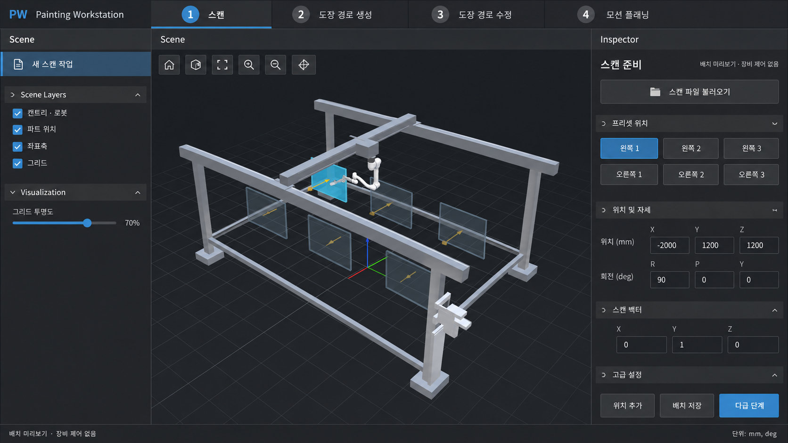
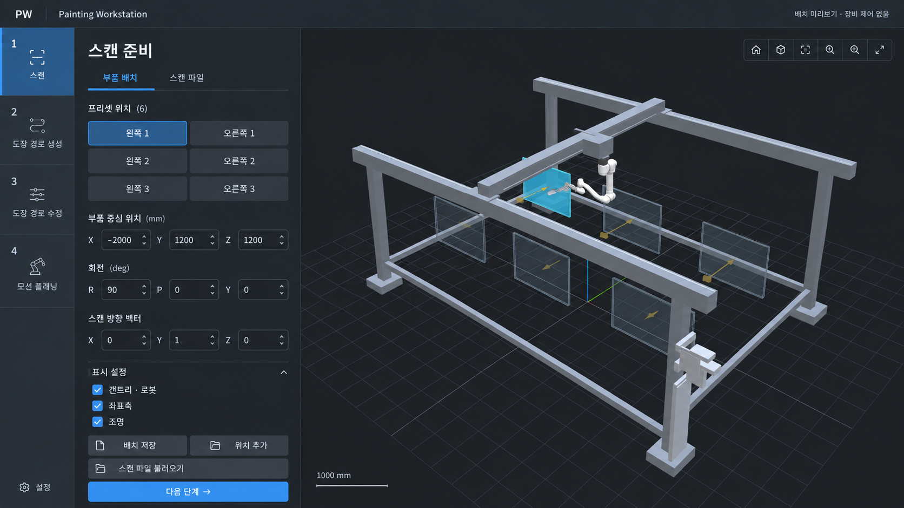
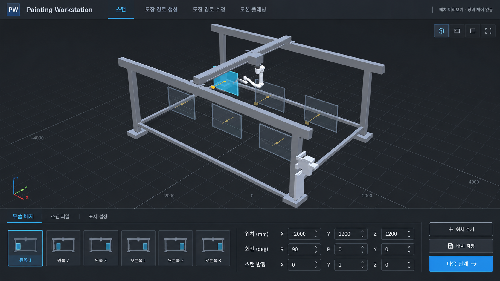
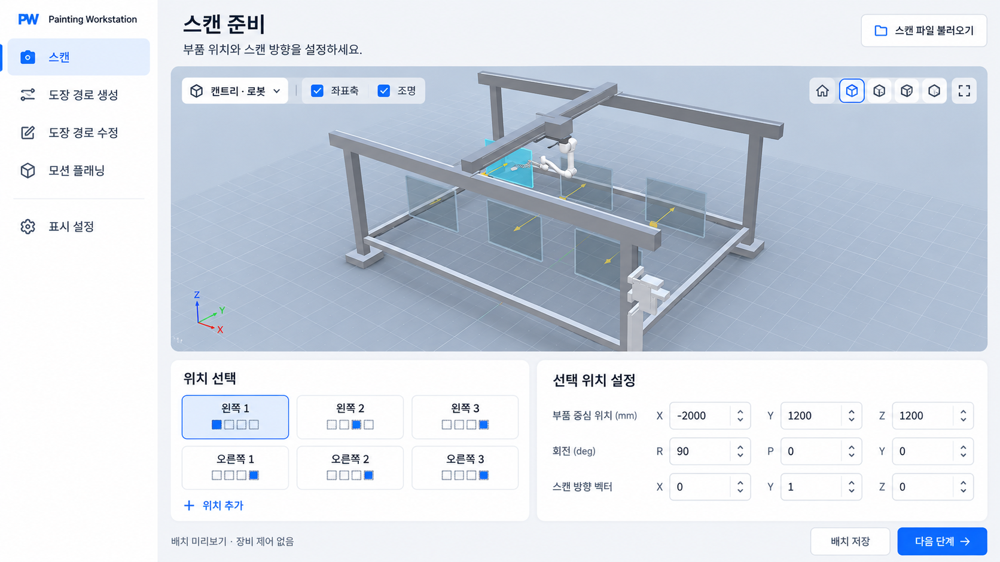
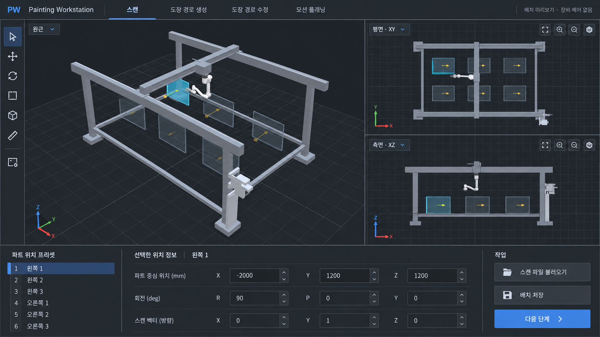
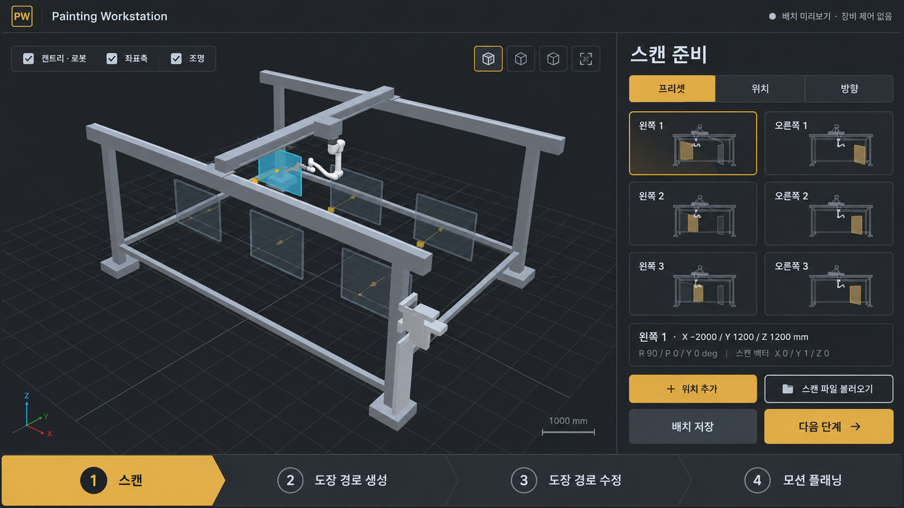
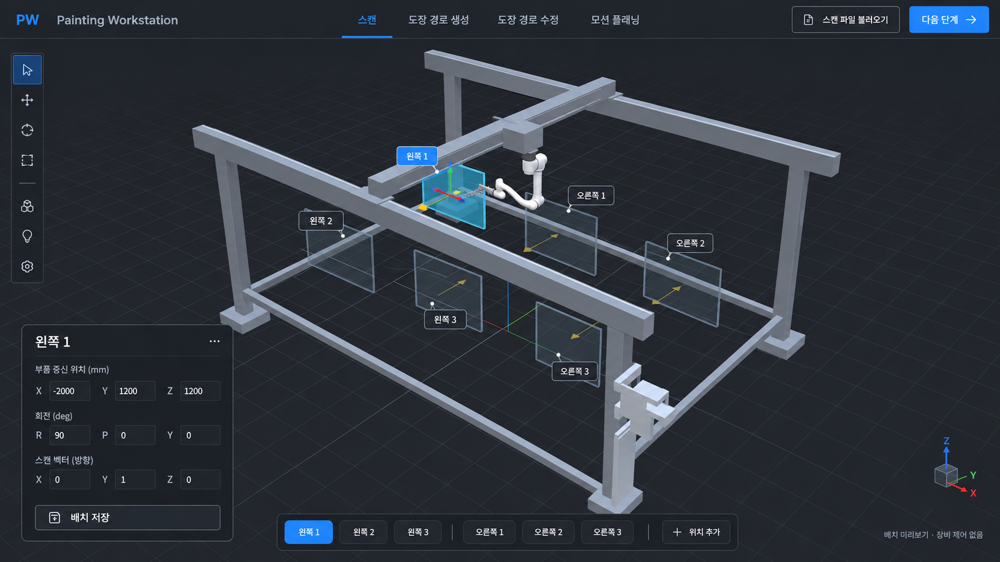
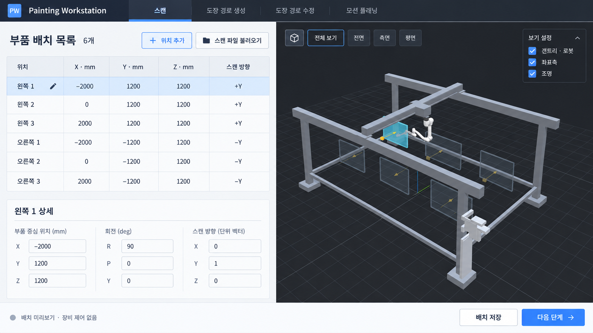

01
기존 작업창 정제형

기존 3열 도킹 구조를 유지하고 실제 이전 앱의 얇은 탭·중성 회색·밀도를 복원
원본 이미지 열기 ↗공통 조건: 첫 실행 · 스캔 준비 · 갠트리와 로봇 · 좌우 3개 부품 위치 프리셋
생성 이미지로 비교하는 디자인 후보이며 실제 앱에는 적용하지 않았습니다. 클릭하면 원본 크기로 볼 수 있습니다.

기존 3열 도킹 구조를 유지하고 실제 이전 앱의 얇은 탭·중성 회색·밀도를 복원
원본 이미지 열기 ↗
공정과 모든 설정을 왼쪽에 모으고 오른쪽을 3D 화면으로 사용
원본 이미지 열기 ↗
좌우 패널을 없애고 프리셋·좌표·실행을 화면 하단에 수평 배치
원본 이미지 열기 ↗
세로 공정 메뉴와 큰 미리보기 카드, 아래 두 작업 카드로 구성
원본 이미지 열기 ↗
원근·평면·측면을 동시에 보여주고 하단에서 좌표를 설정
원본 이미지 열기 ↗
하단 대형 공정 버튼과 오른쪽 프리셋 중심 조작, 세부 값은 탭으로 분리
원본 이미지 열기 ↗
3D를 화면 전체로 확장하고 선택 위치 옆에만 작은 편집 패널 표시
원본 이미지 열기 ↗
왼쪽 배치표에서 여러 위치를 비교·편집하고 오른쪽 3D로 확인
원본 이미지 열기 ↗